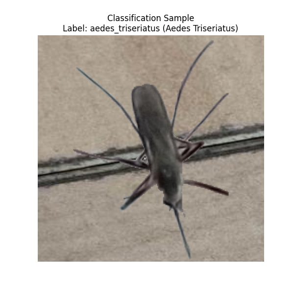
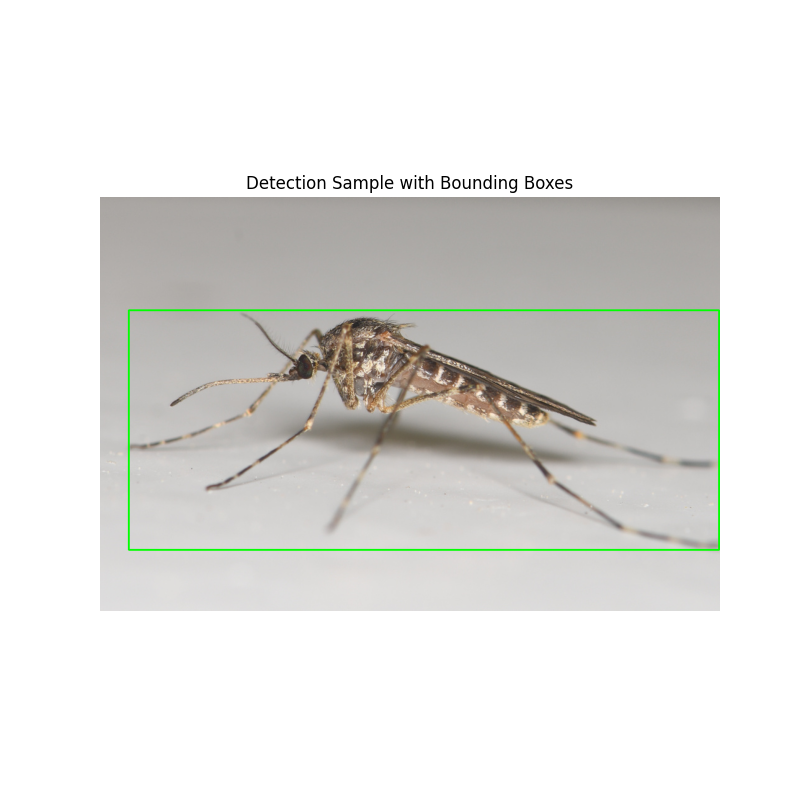
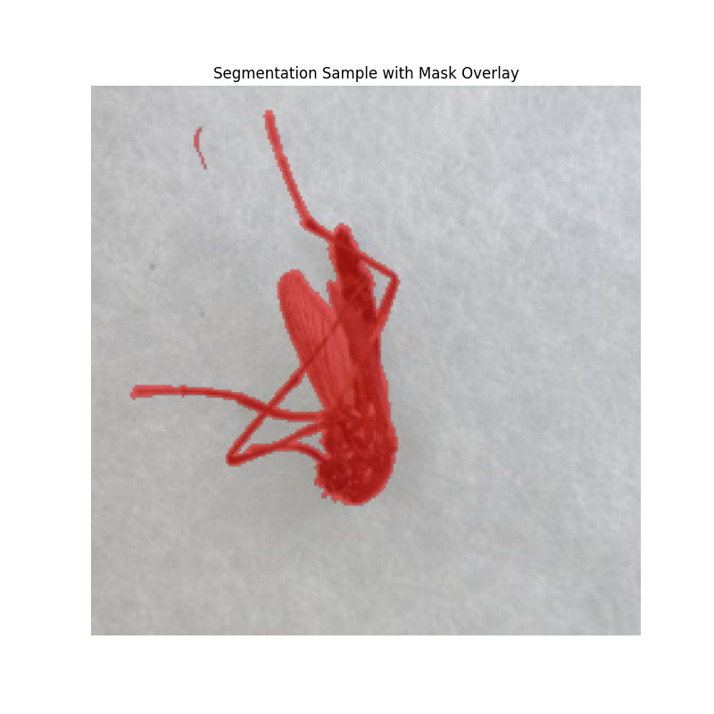
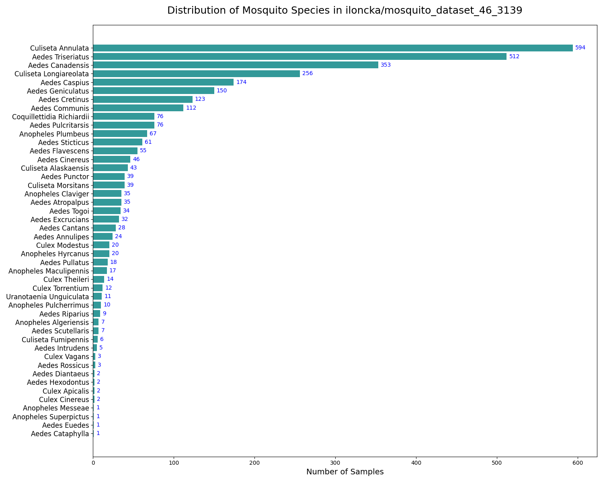
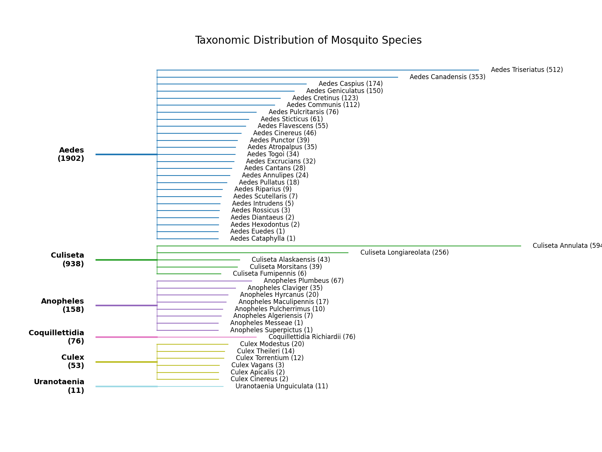

Note
Click here to download the full example code
Managing and Loading Datasets
This tutorial demonstrates how to use the DatasetsManager in CulicidaeLab
to interact with the datasets defined in the library's configuration.
Who is this guide for?
This tutorial is for researchers, developers, and students working on entomology, epidemiology, and computer vision. Whether you're training a new AI model, benchmarking an algorithm, or exploring mosquito biodiversity, this guide will help you get up and running quickly with available mosquito datasets.
What you will learn:
- How to initialize the
DatasetsManager. - To list available mosquito datasets and view their specific details.
- How to load classification, detection, and segmentation datasets.
- How to perform exploratory data analysis (EDA) on a mosquito diversity dataset.
Prerequisites
Before you start, make sure you have culicidaelab and other necessary libraries installed with code:
%pip install culicidaelab requests matplotlib numpy
Standard library imports
from collections import defaultdict
from pathlib import Path
import json
# Third-party imports
import matplotlib.pyplot as plt
import numpy as np
import requests
import yaml
import cv2
# CulicidaeLab imports
from culicidaelab import get_settings, DatasetsManager, DatasetConfig
1. Quick Start: Load a Dataset in 3 Lines
For those who want to get data immediately. This snippet initializes the library and loads the test split of the mosquito species classification dataset.
print("--- Quick Start: Loading Classification Dataset ---")
# Initialize settings and datasets manager
settings = get_settings()
manager = DatasetsManager(settings)
# Load the classification dataset
classification_dataset = manager.load_dataset("classification", split="test")
print(f"üöÄ Quick Start successful! Loaded {len(classification_dataset)} classification samples.")
Out:
--- Quick Start: Loading Classification Dataset ---
Cache hit for split config: test (key: 4d967a30111bf29f)
üöÄ Quick Start successful! Loaded 328 classification samples.
2. Initializing and Exploring Available Datasets
Now, let's dive deeper with each component.
print("--- Initializing Core Components ---")
# The get_settings() function is a singleton, so it will return the
# already loaded instance
settings = get_settings()
# The `DatasetsManager` is your central hub for all dataset-related
# tasks. It handles downloading, caching, and loading.
manager = DatasetsManager(settings)
print("✅ Core components initialized.")
Out:
Listing Datasets and Their Statistics
You can easily see all datasets configured in the library and get a quick overview of their contents.
print("\n--- Available Datasets ---")
dataset_names = manager.list_datasets()
for name in dataset_names:
try:
# Access the dataset's configuration directly from settings
config = settings.get_config(f"datasets.{name}")
class_count = len(config.classes)
print(f"\nüìã Dataset: '{name}'")
print(f" - Provider: {config.provider_name}")
print(f" - Repository: {config.repository}")
print(f" - Format: {config.format}")
print(f" - Classes: {class_count}")
except KeyError:
print(f"\nCould not find configuration for dataset: {name}")
Out:
--- Available Datasets ---
üìã Dataset: 'classification'
- Provider: huggingface
- Repository: iloncka/mosquito-species-classification-dataset
- Format: imagefolder
- Classes: 18
üìã Dataset: 'detection'
- Provider: huggingface
- Repository: iloncka/mosquito-species-detection-dataset
- Format: yolo
- Classes: 1
üìã Dataset: 'segmentation'
- Provider: huggingface
- Repository: iloncka/mosquito-species-segmentation-dataset
- Format: coco
- Classes: 1
üìã Dataset: 'species_diversity'
- Provider: huggingface
- Repository: iloncka/mosquito_dataset_46_3139
- Format: imagefolder
- Classes: 46
3. Loading and Visualizing Each Dataset Type
culicidaelab supports three main task types: classification, detection, and segmentation.
Let's load a sample from each and visualize the data to understand its structure.
Use Case 1: Species Classification
Goal: Identify the species of a mosquito from an image.
Data Structure: The dataset returns a dictionary containing a PIL Image
and an string label.
print("\n--- Loading Classification Dataset ---")
class_data = manager.load_dataset("classification", split="test")
# Let's inspect a single sample
sample = class_data[10]
image = sample["image"]
label = sample["label"]
# The dataset features contain the mapping from integer ID to class name
class_name = class_data.features["label"]
species_name = label.replace("_", " ").title()
print(f"Sample image size: {image.size}")
print(f"Sample label: {label}")
print(f"Corresponding species name: {species_name}")
# Visualize the sample
plt.figure(figsize=(6, 6))
plt.imshow(image)
plt.title(f"Classification Sample\nLabel: {label} ({species_name})")
plt.axis("off")
plt.show()

Out:
--- Loading Classification Dataset ---
Cache hit for split config: test (key: 4d967a30111bf29f)
Sample image size: (224, 224)
Sample label: aedes_triseriatus
Corresponding species name: Aedes Triseriatus
C:/Users/lenova/CascadeProjects/culicidaelab/docs/en/examples/tutorial_part_1_datasets_example.py:137: UserWarning: FigureCanvasAgg is non-interactive, and thus cannot be shown
plt.show()
Use Case 2: Mosquito Detection
Goal: Draw a bounding box around each mosquito in an image.
Data Structure: The dataset provides bounding boxes in [x_min, y_min, x_max, y_max]
format and corresponding labels for each object.
print("\n--- Loading Detection Dataset ---")
# Note: YOLO format may require special handling not covered here.
# We will use the COCO-formatted segmentation dataset and treat its boxes as
# detection boxes for this example.
detect_data = manager.load_dataset("detection", split="train[:20]")
# Inspect a detection sample
detect_sample = detect_data[5]
detect_image_pil = detect_sample["image"]
# Convert PIL image to OpenCV format for drawing
detect_image_cv2 = cv2.cvtColor(np.array(detect_image_pil), cv2.COLOR_RGB2BGR)
objects = detect_sample["objects"]
print(f"Found {len(objects['bboxes'])} object(s) in this image.")
# Draw bounding boxes on the image
for bbox in objects["bboxes"]:
x_min, y_min, x_max, y_max = (int(v) for v in bbox)
# Draw a green rectangle
cv2.rectangle(detect_image_cv2, (x_min, y_min), (x_max, y_max), (0, 255, 0), 2)
# Visualize the sample
plt.figure(figsize=(8, 8))
plt.imshow(cv2.cvtColor(detect_image_cv2, cv2.COLOR_BGR2RGB))
plt.title("Detection Sample with Bounding Boxes")
plt.axis("off")
plt.show()

Out:
--- Loading Detection Dataset ---
Cache hit for split config: train[:20] (key: 9e9940e1c673b6f0)
Found 1 object(s) in this image.
C:/Users/lenova/CascadeProjects/culicidaelab/docs/en/examples/tutorial_part_1_datasets_example.py:174: UserWarning: FigureCanvasAgg is non-interactive, and thus cannot be shown
plt.show()
Use Case 3: Image Segmentation
Goal: Isolate the exact pixels of a mosquito's body from the background.
Data Structure: The dataset provides a label which is a 2D array (mask) where pixel values indicate the class.
print("\n--- Loading Segmentation Dataset ---")
seg_data = manager.load_dataset("segmentation", split="train[:20]")
# Inspect a segmentation sample
seg_sample = seg_data[0]
seg_image = seg_sample["image"]
seg_mask = np.array(seg_sample["label"]) # Convert mask to numpy array
print(f"Image size: {seg_image.size}")
print(f"Segmentation mask shape: {seg_mask.shape}")
print(f"Unique values in mask: {np.unique(seg_mask)}") # 0 is background, 1 is mosquito
# Create a colored overlay for the mask
# Where the mask is 1 (mosquito), we make it red
overlay = np.zeros((*seg_mask.shape, 4), dtype=np.uint8)
overlay[seg_mask >= 1] = [255, 0, 0, 128] # Red color with 50% opacity
# Visualize the image with the mask overlay
fig, ax = plt.subplots(figsize=(8, 8))
ax.imshow(seg_image)
ax.imshow(overlay)
ax.set_title("Segmentation Sample with Mask Overlay")
ax.axis("off")
plt.show()

Out:
--- Loading Segmentation Dataset ---
Cache hit for split config: train[:20] (key: 9e9940e1c673b6f0)
Image size: (224, 224)
Segmentation mask shape: (224, 224)
Unique values in mask: [ 0 1 2 3 4 5 6 7 8 9 10 11 12 13 14 15 16 17 18 19 20 21 22 23 24 25 26 27 28 29 30 31 32 33 34 35 36 37 38 39 40 41 42 43 44 45 46 47 48 49 50 51 52 53 54 55 56 57 58 59 60 61 62 63 64 65 66 67 68 69 70 71 72 73 74 75 76 77 78
79 80 81 82 83 84 85 86 87 88 89 90 91 92 93 94 95 96 97 98 99 100 101 102 103 104 105 106 107 108 109 110 111 112 113 114 115 116 117 118 119 120 121 122 123 124 125 126 127 128 129 130 131 132 133 134 135 136 137 138 139 140 141 142 143 144 145 146 147 148 149 150 151 152 153 154 155 156 157
158 160 161 162 163 164 165 166 167 168 169 170 171 172 173 174 175 176 177 178 179 180 181 182 183 184 185 186 187 188 189 190 191 192 193 194 195 196 197 198 199 200 201 202 203 204 205 206 207 208 209 210 211 212 213 214 215 216 217 218 219 220 221 222 223 224 225 226 227 228 229 230 231 232 233 234 235 236 237
238 239 240 241 242 243 244 245 246 247 248 249 250 251 252 253 254]
C:/Users/lenova/CascadeProjects/culicidaelab/docs/en/examples/tutorial_part_1_datasets_example.py:207: UserWarning: FigureCanvasAgg is non-interactive, and thus cannot be shown
plt.show()
4. Advanced: Exploratory Data Analysis (EDA)
Understanding your data's distribution is vital. Here, we'll analyze the foundational
mosquito-species-diversity dataset.
We will fetch the repository_id using datasets manager, making the code robust and reusable.
Get the repository ID from the dataset config.
try:
diversity_config = manager.get_dataset_info("species_diversity")
repo_id = diversity_config.repository
print(f"✅ Successfully found repository ID from settings: {repo_id}")
except KeyError:
print("❌ Could not find 'mosquito-species-diversity' dataset in settings.")
repo_id = None
Out:
Exploring the mosquito species diversity dataset
This dataset serves as the foundational source for the classification, detection, and segmentation datasets. It contains a rich collection of images with corresponding labels and bounding box information.
Let's start by fetching some basic statistics.
The repository ID for our source dataset on Hugging Face
def get_dataset_statistics(repo_id, config_name="default", split_name="train"):
"""Fetch detailed column statistics for a dataset split from the Hugging Face API."""
api_url = (
f"https://datasets-server.huggingface.co/statistics?dataset={repo_id}&config={config_name}&split={split_name}"
)
print(f"Querying API: {api_url}")
response = requests.get(api_url, timeout=10)
response.raise_for_status() # Will raise an error for bad responses
return response.json()
# Fetch the statistics
print(f"--- Fetching statistics for '{repo_id}' ---")
try:
dataset_info = get_dataset_statistics(repo_id)
print("✅ Statistics fetched successfully.")
except requests.exceptions.RequestException as e:
print(f"❌ Failed to fetch statistics: {e}")
dataset_info = None
Out:
--- Fetching statistics for 'iloncka/mosquito_dataset_46_3139' ---
Querying API: https://datasets-server.huggingface.co/statistics?dataset=iloncka/mosquito_dataset_46_3139&config=default&split=train
✅ Statistics fetched successfully.
Visualizing Class Distribution
A balanced dataset is crucial for training a robust model. Let's write a function to visualize the number of samples for each mosquito species to check for any significant imbalances.
def get_label_stats(dataset_info):
"""Extract label frequencies from the fetched dataset statistics."""
if not dataset_info:
return None
for column in dataset_info.get("statistics", []):
if column.get("column_name") == "label" and column.get("column_type") == "string_label":
return column["column_statistics"].get("frequencies", {})
print("Warning: 'label' statistics not found.")
return None
def create_distribution_plot(
dataset_info,
repo_id,
color="teal",
figsize=(15, 12),
output_file="class_distribution.png",
):
"""Creates and saves a bar chart of the class distribution."""
label_stats = get_label_stats(dataset_info)
if not label_stats:
print("Cannot create plot: No label statistics available.")
return
# Sort classes by the number of samples for better visualization
sorted_items = sorted(label_stats.items(), key=lambda x: x[1], reverse=True)
classes, counts = zip(*sorted_items)
_, ax = plt.subplots(figsize=figsize)
y_pos = np.arange(len(classes))
ax.barh(y_pos, counts, align="center", color=color, alpha=0.8)
# Format plot for clarity
ax.set_yticks(y_pos)
formatted_classes = [c.replace("_", " ").title() for c in classes]
ax.set_yticklabels(formatted_classes, fontsize=12)
ax.invert_yaxis() # Display the class with the most samples at the top
ax.set_xlabel("Number of Samples", fontsize=14)
ax.set_title(f"Distribution of Mosquito Species in {repo_id}", pad=20, fontsize=18)
# Add count labels to each bar
for i, v in enumerate(counts):
ax.text(v + 3, i, str(v), color="blue", va="center", fontsize=10)
plt.tight_layout()
plt.savefig(output_file, dpi=300, bbox_inches="tight")
print(f"✅ Distribution plot saved as {output_file}")
plt.show()
# Generate and display the plot
if dataset_info:
create_distribution_plot(dataset_info, repo_id)

Out:
✅ Distribution plot saved as class_distribution.png
C:/Users/lenova/CascadeProjects/culicidaelab/docs/en/examples/tutorial_part_1_datasets_example.py:318: UserWarning: FigureCanvasAgg is non-interactive, and thus cannot be shown
plt.show()
This chart gives you an immediate understanding of which species are well-represented and which might require techniques like data augmentation or weighted loss functions during model training.
Visualizing Taxonomic Distribution
To better understand the relationships between species, we can visualize the dataset in a hierarchical tree structure, grouping species by their genus. This provides insight into the taxonomic diversity of the data.
def create_tree_visualization(
dataset_info,
figsize=(16, 12),
output_file="taxonomic_tree.png",
):
"""Creates a tree-like visualization of species grouped by genus."""
label_stats = get_label_stats(dataset_info)
if not label_stats:
print("Cannot create visualization: No label statistics available.")
return
# Group species by genus and calculate totals
genus_groups = defaultdict(list)
genus_totals = defaultdict(int)
for species, count in label_stats.items():
genus = species.split("_")[0]
genus_groups[genus].append((species, count))
genus_totals[genus] += count
# Sort genera by the total number of samples
sorted_genera = sorted(genus_totals.items(), key=lambda x: x[1], reverse=True)
fig, ax = plt.subplots(figsize=figsize)
# --- Plotting Logic ---
total_species_count = len(label_stats)
y_positions = np.linspace(0.95, 0.05, total_species_count)
current_y_idx = 0
# Use a color map for different genera
colors = plt.cm.get_cmap("tab20", len(sorted_genera))
for i, (genus, total_count) in enumerate(sorted_genera):
species_in_genus = sorted(genus_groups[genus], key=lambda x: x[1], reverse=True)
num_species = len(species_in_genus)
# Define y-coordinates for this genus block
y_start = y_positions[current_y_idx]
y_end = y_positions[current_y_idx + num_species - 1]
y_genus_mid = (y_start + y_end) / 2
# Draw genus branch and label
ax.plot([0.1, 0.2], [y_genus_mid, y_genus_mid], color=colors(i), linewidth=3)
ax.text(
0.08,
y_genus_mid,
f"{genus.title()}\n({total_count})",
ha="right",
va="center",
fontsize=14,
weight="bold",
)
# Draw vertical connector for species in this genus
ax.plot([0.2, 0.2], [y_start, y_end], color=colors(i), linewidth=1)
# Draw branches for each species
for species_name, count in species_in_genus:
y_species = y_positions[current_y_idx]
branch_length = 0.1 + 0.5 * (count / max(label_stats.values()))
ax.plot([0.2, 0.2 + branch_length], [y_species, y_species], color=colors(i), linewidth=1.5)
ax.text(
0.22 + branch_length,
y_species,
f"{species_name.replace('_', ' ').title()} ({count})",
va="center",
fontsize=12,
)
current_y_idx += 1
# --- Final Plot Customization ---
ax.axis("off")
plt.title("Taxonomic Distribution of Mosquito Species", fontsize=20, pad=20)
plt.savefig(output_file, dpi=300, bbox_inches="tight")
print(f"✅ Tree visualization saved as {output_file}")
plt.show()
# Generate and display the tree visualization
if dataset_info:
create_tree_visualization(dataset_info)

Out:
C:/Users/lenova/CascadeProjects/culicidaelab/docs/en/examples/tutorial_part_1_datasets_example.py:369: MatplotlibDeprecationWarning: The get_cmap function was deprecated in Matplotlib 3.7 and will be removed in 3.11. Use ``matplotlib.colormaps[name]`` or ``matplotlib.colormaps.get_cmap()`` or ``pyplot.get_cmap()`` instead.
colors = plt.cm.get_cmap("tab20", len(sorted_genera))
✅ Tree visualization saved as taxonomic_tree.png
C:/Users/lenova/CascadeProjects/culicidaelab/docs/en/examples/tutorial_part_1_datasets_example.py:415: UserWarning: FigureCanvasAgg is non-interactive, and thus cannot be shown
plt.show()
This plot provides a clear visual summary of the dataset's structure, showing which genera are most prevalent and how the samples are distributed among their respective species. It's an invaluable tool for both educational purposes and for guiding research that may focus on specific genera.
5. Advanced: Adding a Custom Dataset
culicidaelab is designed to be extensible. You can easily add your own Hugging Face
datasets by creating a simple YAML configuration file.
Step 1: Understanding the Required Structure with DatasetConfig
Before writing a configuration, you need to know what fields are required.
All dataset configurations are validated against the DatasetConfig Pydantic model.
We can inspect this model directly to get a perfect template.
# Let's print the model's docstring for a human-readable explanation.
print("--- DatasetConfig Model Documentation ---")
print(DatasetConfig.__doc__)
# For a precise, technical blueprint, we can generate its JSON Schema.
# This shows all fields, their types, and which ones are required.
print("\n--- DatasetConfig JSON Schema ---")
schema = DatasetConfig.model_json_schema()
print(json.dumps(schema, indent=2))
Out:
--- DatasetConfig Model Documentation ---
Configuration for a single dataset.
Args:
name (str): The unique internal name for the dataset.
path (str): The local directory path for storing the dataset.
format (str): The dataset format (e.g., "imagefolder", "coco", "yolo").
classes (list[str]): A list of class names present in the dataset.
provider_name (str): The name of the data provider (e.g., "huggingface").
repository (str): The repository ID on the provider's platform.
derived_datasets (list[str] | None): A list of Hugging Face repository IDs
for datasets that were derived from this one. Defaults to None.
trained_models_repositories (list[str] | None): A list of Hugging Face
repository IDs for models trained on this dataset. Defaults to None.
--- DatasetConfig JSON Schema ---
{
"additionalProperties": true,
"description": "Configuration for a single dataset.\n\nArgs:\n name (str): The unique internal name for the dataset.\n path (str): The local directory path for storing the dataset.\n format (str): The dataset format (e.g., \"imagefolder\", \"coco\", \"yolo\").\n classes (list[str]): A list of class names present in the dataset.\n provider_name (str): The name of the data provider (e.g., \"huggingface\").\n repository (str): The repository ID on the provider's platform.\n derived_datasets (list[str] | None): A list of Hugging Face repository IDs\n for datasets that were derived from this one. Defaults to None.\n trained_models_repositories (list[str] | None): A list of Hugging Face\n repository IDs for models trained on this dataset. Defaults to None.",
"properties": {
"name": {
"title": "Name",
"type": "string"
},
"path": {
"title": "Path",
"type": "string"
},
"format": {
"title": "Format",
"type": "string"
},
"classes": {
"items": {
"type": "string"
},
"title": "Classes",
"type": "array"
},
"provider_name": {
"title": "Provider Name",
"type": "string"
},
"repository": {
"title": "Repository",
"type": "string"
},
"config_name": {
"anyOf": [
{
"type": "string"
},
{
"type": "null"
}
],
"default": "default",
"title": "Config Name"
},
"derived_datasets": {
"anyOf": [
{
"items": {
"type": "string"
},
"type": "array"
},
{
"type": "null"
}
],
"default": null,
"title": "Derived Datasets"
},
"trained_models_repositories": {
"anyOf": [
{
"items": {
"type": "string"
},
"type": "array"
},
{
"type": "null"
}
],
"default": null,
"title": "Trained Models Repositories"
}
},
"required": [
"name",
"path",
"format",
"classes",
"provider_name",
"repository"
],
"title": "DatasetConfig",
"type": "object"
}
Step 2: Create a Custom Configuration File
Now that we know the required structure, let's create a custom configuration.
First, it's best practice to keep your custom configurations separate from the library's defaults. We'll create a dedicated directory for them.
custom_config_dir = Path("culicidae_custom_config")
custom_config_dir.mkdir(exist_ok=True)
print(f"Created custom config directory at: ./{custom_config_dir.name}")
Out:
Next, create a .yaml file inside this directory. Your file must name
datasets, in this file you can define one or more named dataset configurations,
where each one follows the DatasetConfig structure we just inspected.
Example: Let's add a configuration for a hypothetical culex-pipiens-complex dataset.
The file's stem will become the top-level key in the merged config. To override the library's 'datasets' section, save the mapping directly
custom_dataset_config = {
"culex-pipiens-complex": {
"name": "culex-pipiens-complex",
"path": "culex_pipiens_complex",
"format": "imagefolder",
"classes": ["culex_pipiens", "culex_torrentium"],
"provider_name": "huggingface",
"repository": "my-org/culex-pipiens-complex-dataset",
},
}
config_file_path = custom_config_dir / "datasets.yaml"
with open(config_file_path, "w") as f:
yaml.safe_dump(custom_dataset_config, f)
print(f"✅ Custom dataset config saved to: {config_file_path}")
Out:
Step 3: Load culicidaelab with Your Custom Configuration
The get_settings function will create a new, merged settings instance
when a config_dir is provided, loading your custom file on top of the defaults.
print("\n--- Initializing with Custom Settings ---")
custom_settings = get_settings(config_dir=str(custom_config_dir))
# Create a new manager with the custom settings
custom_manager = DatasetsManager(custom_settings)
print("\n--- Listing All Datasets (including custom) ---")
all_datasets = custom_manager.list_datasets()
print(all_datasets)
if "culex-pipiens-complex" in all_datasets:
print("\n✅ Successfully added 'culex-pipiens-complex' to the available datasets!")
else:
print("\n❌ Custom dataset was not loaded correctly.")
Out:
--- Initializing with Custom Settings ---
--- Listing All Datasets (including custom) ---
['classification', 'detection', 'segmentation', 'species_diversity', 'culex-pipiens-complex']
✅ Successfully added 'culex-pipiens-complex' to the available datasets!
6. Next Steps & Further Reading
You now have a solid understanding of how to use the DatasetsManager in culicidaelab.
From here, you can:
- Train a new model: Use the loaded data with your favorite deep learning framework.
- Contribute to the project: If you have your own labeled mosquito datasets, consider sharing them with the community.
- Explore the API: Dive deeper into the
culicidaelabsource code to discover more functionalities.
By providing standardized datasets and an easy-to-use interface, culicidaelab aims
to accelerate innovation in the fight against mosquito-borne diseases. Happy coding!
Total running time of the script: ( 0 minutes 7.465 seconds)
Download Python source code: tutorial_part_1_datasets_example.py
Download Jupyter notebook: tutorial_part_1_datasets_example.ipynb